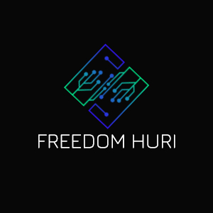

Hurisanのプロフィール
現在進行形の高校生。
中2でパソコン関連&IT関連に興味を持つ
主に「HTML / CSS / Javascript」をメインで使用する
過去にこのサイトは
「総合雑談・2019年からの歴史・フリーソフト紹介」様々変化してきた
頭は結構悪い（定期）
ここからはアイコン集
旧自分のアイコンです。

今の自分のアイコンです。
サーバーのアイコンです。
過去のサイト作成中のツイート一覧
※順番はバラバラです。
— フリさん (@Freedomhuri) April 30, 2023
こんな感じの作ってます。
— フリさん (@Freedomhuri) May 4, 2023
なんか色とか特に組み合わせあったら教えてくださいｗ
出来れば16進数カラーコードで pic.twitter.com/WzAycrsT9D
buttonを作成してみました。めっちゃ見やすいし、押しやすくなりました！ pic.twitter.com/HENZYgBvN9
— hurisan-FTPweb (@hurisan0909) May 17, 2023